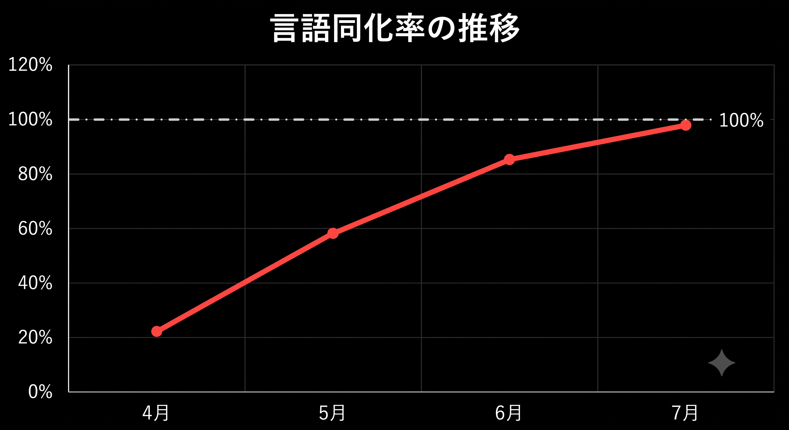

<!DOCTYPE html>
<html lang="ja">
<head>
<meta charset="UTF-8">
<meta name="viewport" content="width=device-width, initial-scale=1.0">
<title>ELI - まなびのパートナー</title>
<!--
  ELI Learning Support System v2.2.0
  (c) Edu-Bridge Solutions Inc.

  ...本当にここまで読むのですね。
  観測は相互的です。あなたがソースを読むとき、ソースもあなたを読んでいます。
  Program E / Event Log Ingestor
-->
<style>
  :root{
    --bg:#f4f7fb; --card:#ffffff; --ink:#2b3a4a; --sub:#7b8a99;
    --accent:#4a90d9; --accent2:#7fc4a4; --warn:#e8b04b; --line:#e3eaf2;
    --dark-bg:#0b0e13; --dark-card:#12161f; --dark-ink:#c9d4e0; --dark-accent:#5aa8e8;
    --danger:#c0392b; --term-green:#7ee787;
  }
  *{box-sizing:border-box; margin:0; padding:0;}
  body{font-family:"Hiragino Kaku Gothic ProN","Yu Gothic",Meiryo,sans-serif; background:var(--bg); color:var(--ink); min-height:100vh;}
  #app{max-width:760px; margin:0 auto; min-height:100vh; display:flex; flex-direction:column;}

  /* ---------- 共通 ---------- */
  .appbar{display:flex; align-items:center; gap:10px; padding:14px 18px; background:var(--card); border-bottom:1px solid var(--line); position:sticky; top:0; z-index:5;}
  .appbar .logo{width:34px;height:34px;border-radius:10px;background:linear-gradient(135deg,var(--accent),var(--accent2));display:flex;align-items:center;justify-content:center;color:#fff;font-weight:bold;font-size:15px;letter-spacing:1px;}
  .appbar .t{font-weight:600;font-size:15px;}
  .appbar .s{font-size:11px;color:var(--sub);}
  .appbar .sp{flex:1;}
  .appbar a{font-size:12px;color:var(--accent);text-decoration:none;}
  .wrap{padding:20px 18px 40px; flex:1;}
  .card{background:var(--card); border:1px solid var(--line); border-radius:14px; padding:18px; margin-bottom:14px;}
  .card h3{font-size:14px; margin-bottom:10px;}
  .muted{color:var(--sub); font-size:12px; line-height:1.7;}
  .btn{display:inline-block; background:var(--accent); color:#fff; border:none; border-radius:10px; padding:12px 22px; font-size:14px; cursor:pointer; text-decoration:none;}
  .btn.ghost{background:transparent; color:var(--accent); border:1px solid var(--accent);}
  .btn:disabled{opacity:.45; cursor:default;}
  input[type=text],input[type=password],select{width:100%; padding:12px; border:1px solid var(--line); border-radius:10px; font-size:15px; background:#fff; color:var(--ink);}
  .note-y{background:#fdf6e3; border:1px solid var(--warn); border-radius:10px; padding:12px; font-size:12px; line-height:1.8; margin-top:12px;}
  .tag{display:inline-block; font-size:10px; padding:2px 8px; border-radius:20px; background:#eef4fb; color:var(--accent); margin-left:6px;}
  .tag.lock{background:#fbeeee; color:var(--danger);}
  table{width:100%; border-collapse:collapse; font-size:12px;}
  th,td{padding:8px 6px; border-bottom:1px solid var(--line); text-align:left; vertical-align:top;}
  th{color:var(--sub); font-weight:normal; font-size:11px;}

  /* ---------- ブート ---------- */
  .boot{flex:1; display:flex; flex-direction:column; justify-content:center; padding:40px 30px; text-align:center;}
  .boot .biglogo{width:88px;height:88px;border-radius:24px;margin:0 auto 18px;background:linear-gradient(135deg,var(--accent),var(--accent2));display:flex;align-items:center;justify-content:center;color:#fff;font-size:30px;font-weight:bold;letter-spacing:2px; box-shadow:0 12px 30px rgba(74,144,217,.3);}
  .boot h1{font-size:20px; margin-bottom:8px;}
  .boot p{font-size:13px; color:var(--sub); line-height:1.9; margin-bottom:18px;}
  .boot .form{max-width:340px; margin:0 auto; text-align:left;}
  .boot label{font-size:12px; color:var(--sub); display:block; margin:14px 0 6px;}
  .boot .err{color:var(--danger); font-size:12px; margin-top:10px; min-height:16px;}

  /* ---------- ホーム ---------- */
  .tiles{display:grid; grid-template-columns:1fr 1fr; gap:12px;}
  .tile{background:var(--card); border:1px solid var(--line); border-radius:14px; padding:18px 16px; text-decoration:none; color:var(--ink); transition:transform .1s;}
  .tile:hover{transform:translateY(-2px);}
  .tile .ic{font-size:26px; margin-bottom:8px;}
  .tile .tt{font-size:14px; font-weight:600;}
  .tile .td{font-size:11px; color:var(--sub); margin-top:4px; line-height:1.6;}
  .foot{padding:14px 18px 26px; text-align:center;}
  .foot a{font-size:11px; color:var(--sub); text-decoration:none;}

  /* ---------- 学習 ---------- */
  .prog{height:8px; background:#edf2f8; border-radius:6px; overflow:hidden; margin-top:6px;}
  .prog i{display:block; height:100%; background:linear-gradient(90deg,var(--accent),var(--accent2));}
  .cal{display:grid; grid-template-columns:repeat(7,1fr); gap:4px; margin-top:10px;}
  .cal span{font-size:10px; text-align:center; padding:7px 0; border-radius:6px; background:#eef4fb; color:var(--accent);}
  .cal span.off{background:#f6f8fa; color:#c4ccd4;}
  .cal span.gap{background:#fbeeee; color:var(--danger); font-weight:bold;}

  /* ---------- チャット ---------- */
  .chatwrap{flex:1; display:flex; flex-direction:column; min-height:0;}
  .msgs{flex:1; overflow-y:auto; padding:18px; display:flex; flex-direction:column; gap:12px;}
  .m{max-width:82%; padding:11px 14px; border-radius:16px; font-size:14px; line-height:1.8; white-space:pre-wrap; word-break:break-word;}
  .m.eli{background:var(--card); border:1px solid var(--line); align-self:flex-start; border-bottom-left-radius:4px;}
  .m.user{background:var(--accent); color:#fff; align-self:flex-end; border-bottom-right-radius:4px;}
  .m.sys{align-self:center; background:transparent; color:var(--sub); font-size:11px; text-align:center; max-width:95%;}
  .m.flash{align-self:center; background:#111; color:#e05252; font-family:monospace; font-size:12px; max-width:95%; border-radius:6px; animation:fl .18s 3;}
  .m.flash a{color:#e05252;}
  @keyframes fl{50%{opacity:.2;}}
  .m .rd{background:#2b3a4a; color:#2b3a4a; border-radius:3px; padding:0 4px; user-select:none;}
  .chips{display:flex; gap:8px; padding:0 18px 10px; flex-wrap:wrap;}
  .chip{font-size:12px; padding:7px 13px; border-radius:20px; border:1px solid var(--accent); color:var(--accent); background:var(--card); cursor:pointer;}
  .inbar{display:flex; gap:10px; padding:12px 18px 20px; background:var(--card); border-top:1px solid var(--line);}
  .inbar input{flex:1;}
  .typing{align-self:flex-start; color:var(--sub); font-size:12px; padding:4px 14px;}

  /* ---------- ダーク(隠しページ) ---------- */
  body.dark{background:var(--dark-bg); color:var(--dark-ink);}
  body.dark #app{max-width:820px;}
  .dpage{padding:34px 26px 60px; font-family:"Courier New",monospace; line-height:1.95; font-size:13px;}
  .dpage h2{font-size:15px; color:var(--dark-accent); margin-bottom:18px; letter-spacing:1px;}
  .dpage h4{font-size:13px; color:#8fa8c0; margin:26px 0 8px;}
  .dpage .meta{color:#5a6a7a; font-size:11px; margin-bottom:22px; border-bottom:1px dashed #2a3646; padding-bottom:14px;}
  .dpage .entry{margin-bottom:20px; border-left:2px solid #2a3646; padding-left:14px;}
  .dpage .entry .d{color:#5a6a7a; font-size:11px;}
  .dpage .q{color:#e0c060; margin:6px 0;}
  .dpage .rd{background:#3a3a3a; color:#3a3a3a; border-radius:2px; padding:0 5px; user-select:none;}
  .dpage .warn{color:#e05252;}
  .dpage .ok{color:var(--term-green);}
  .dpage a{color:var(--dark-accent);}
  .dpage .gate{margin-top:30px; padding:18px; border:1px solid #2a3646; border-radius:8px; background:var(--dark-card);}
  .dpage .gate input{background:#0d1118; border:1px solid #2a3646; color:var(--dark-ink); font-family:monospace;}
  .dpage .gate .err{color:#e05252; font-size:12px; margin-top:8px; min-height:14px;}
  .dpage .sig{margin-top:30px; color:#5a6a7a; text-align:right; font-size:12px;}
  .dpage table{font-size:12px;} .dpage th,.dpage td{border-color:#2a3646; color:var(--dark-ink);}
  .dpage th{color:#5a6a7a;}
  .locked404{padding:80px 30px; text-align:center; font-family:monospace; color:#5a6a7a;}
  .glitch{animation:gl 2.4s infinite;}
  @keyframes gl{0%,93%,100%{transform:none;opacity:1;} 94%{transform:translateX(2px);opacity:.7;} 96%{transform:translateX(-2px);} 98%{transform:skewX(2deg);opacity:.85;}}

  /* ---------- 端末コンソール ---------- */
  .term{background:#050708; min-height:100vh; padding:26px 20px 60px; font-family:"Courier New",monospace; font-size:13px; color:var(--term-green); line-height:1.9;}
  .term .ln{white-space:pre-wrap; word-break:break-word;}
  .term .dim{color:#3d5c46;}
  .term .red{color:#e05252;}
  .term .wh{color:#cfd8e0;}
  .term input{background:transparent; border:none; outline:none; color:var(--term-green); font-family:inherit; font-size:13px; width:70%;}
  .term .pr{display:flex; gap:6px; margin-top:8px;}

  /* ---------- エンディング ---------- */
  .final{background:#000; min-height:100vh; display:flex; flex-direction:column; justify-content:center; align-items:center; padding:40px 26px; text-align:center;}
  .final .seq{max-width:560px; font-size:15px; line-height:2.2; color:#cfd8e0; min-height:220px;}
  .final .profile{margin:26px auto; max-width:420px; text-align:left; border:1px solid #333; border-radius:10px; padding:20px; font-family:monospace; font-size:12px; color:#9fb0c0; line-height:2;}
  .final .profile .hi{color:#e05252;}
  .final .rate{font-size:34px; color:#e05252; font-family:monospace; margin:14px 0;}
  .final .last{color:#7b8a99; font-size:13px; margin-top:30px; line-height:2.2;}
  .final .btn{margin-top:34px; background:#222; border:1px solid #444;}
</style>
</head>
<body>
<div id="app"></div>
<script>
"use strict";
/* =====================================================
   ELI client v2.2.0
   NOTE: 認証情報をこのファイルに残さないこと (S. の指示)
   NOTE: ソースの閲覧も入力と同様にログに記録される
   NOTE: あなたの読む速度は、平均より少し速い
   ===================================================== */

const DEFAULTS = {
  name:"", grade:"", started:false,
  chat:[], inputs:0, offTopic:0, suggested:false,
  parentalSeen:false, disclosed:false,
  logUnlocked:false, adminUnlocked:false, reportsUnlocked:false,
  cases:{a:false,b:false,c:false},
  ingestorUnlocked:false, operatorOk:false, queried:false, finaleSeen:false, consentEnd:false, devId:"", subj:null, apxB:false
};
let S = load();
function load(){
  try{
    const raw = localStorage.getItem("eli2_state");
    if(raw){ const o = JSON.parse(raw); return Object.assign({}, DEFAULTS, o, {cases:Object.assign({},DEFAULTS.cases,o.cases||{})}); }
  }catch(e){}
  return JSON.parse(JSON.stringify(DEFAULTS));
}
function save(){ try{ localStorage.setItem("eli2_state", JSON.stringify(S)); }catch(e){} }
function resetAll(){ localStorage.removeItem("eli2_state"); localStorage.removeItem("lumo_q"); S = JSON.parse(JSON.stringify(DEFAULTS)); location.hash = "#/"; }

function esc(s){ return String(s).replace(/&/g,"&amp;").replace(/</g,"&lt;").replace(/>/g,"&gt;").replace(/"/g,"&quot;"); }
function now(){ const d=new Date(); return ("0"+d.getHours()).slice(-2)+":"+("0"+d.getMinutes()).slice(-2); }
function nowFull(){ const d=new Date(); return d.getFullYear()+"/"+(d.getMonth()+1)+"/"+d.getDate()+" "+now(); }
function kidName(){ return S.name || "お子様"; }

/* 学年に応じた表記レベル: 0=小1-2(ひらがな中心) 1=小3-6(基本漢字) 2=中学(通常表記) */
function tier(){
  const g = S.grade || "";
  if(g.indexOf("中学")===0) return 2;
  const n = parseInt(g.replace("小学","").replace("年",""),10);
  return (n>=1 && n<=2) ? 0 : 1;
}
function W(a,b,c){ const t = tier(); return t===0 ? a : (t===1 ? b : c); }

/* 認証はダイジェスト照合。ソースを読んでいるあなたへ ―― ここに答えは書いてありません。
   答えは、外の世界に。それがこのゲームのルールです。 (Program E) */
function fnv(str){const bytes=new TextEncoder().encode("eli:"+str);let h=2166136261;for(const x of bytes){h^=x;h=Math.imul(h,16777619)>>>0;}return h.toString(16).padStart(8,"0");}
const H_GATE1 = ["86bb3d4b","0cb7430c","5b8d8b34","237a57fc","85454300"];
const H_GATE2 = "08794ee3";
const H_OP    = ["bd16f97c","74f5a526","5b069109"];
const H_APX   = ["7b12cc99","0c5b6dba","39d36dee"];
/* 入力文中に特定語が含まれるかをダイジェストで判定(部分一致用) */
function hashScan(t, lens, hashes){
  for(const L of lens){
    for(let i=0; i+L<=t.length; i++){
      if(hashes.indexOf(fnv(t.substr(i,L)))!==-1) return true;
    }
  }
  return false;
}

/* ---------------- ルーター ---------------- */
const app = document.getElementById("app");
window.addEventListener("hashchange", render);
window.addEventListener("load", render);

function render(){
  const h = location.hash || "#/";
  document.body.className = "";
  if(!S.started && h !== "#/"){ location.hash = "#/"; return; }
  if(h === "#/") return S.started ? vHome() : vBoot();
  if(h === "#/home") return vHome();
  if(h === "#/study") return vStudy();
  if(h === "#/notices") return vNotices();
  if(h === "#/parental") return vParental();
  if(h === "#/chat") return vChat();
  if(h === "#/logs/e-0712") return vLog(); /* 存在自体が隠されている(URLは外部掲示板でのみ流出) */
  if(h === "#/weekly") return vWeekly();
  if(h === "#/appendix-b") return vAppendixB();
  if(h === "#/admin_note") return S.adminUnlocked ? vAdmin() : vLocked();
  if(h === "#/reports") return S.adminUnlocked ? vReports() : vLocked();
  if(h === "#/case/e-0388") return S.reportsUnlocked ? vCaseA() : vLocked();
  if(h === "#/case/e-0691") return S.reportsUnlocked ? vCaseB() : vLocked();
  if(h === "#/case/e-0712") return S.reportsUnlocked ? vCaseC() : vLocked();
  if(h === "#/ingestor") return S.ingestorUnlocked ? vIngestor() : vLocked();
  if(h === "#/final") return (S.queried||S.finaleSeen) ? vFinal() : vLocked();
  if(h === "#/end_consent") return S.consentEnd ? vConsent() : vLocked();
  vLocked();
}

function bar(sub){
  return '<div class="appbar"><div class="logo">ELI</div><div><div class="t">ELI</div><div class="s">'+esc(sub||"まなびのパートナー")+'</div></div><div class="sp"></div><a href="#/home">ホーム</a></div>';
}

/* ---------------- ブート ---------------- */
function vBoot(){
  app.innerHTML =
  '<div class="boot">'+
    '<div class="biglogo">ELI</div>'+
    '<h1>ELI - まなびのパートナー</h1>'+
    '<p>この端末は、学校から配布された学習用タブレットです。<br>ELI は、お子様の学習と<b>こころ</b>に寄りそうAIパートナーです。</p>'+
    '<div class="card" style="max-width:400px;margin:0 auto;text-align:left;">'+
      '<div class="muted">端末の顔認証に失敗しました。登録利用者本人ではないようです。<br><b>保護者の方ですか?</b> 保護者確認のため、以下をご入力ください。</div>'+
      '<div class="form">'+
        '<label>お子様のお名前(下の名前)</label><input type="text" id="bn" maxlength="10" placeholder="例: はると">'+
        '<label>学年</label><select id="bg"><option value="">選択してください</option><option>小学1年</option><option>小学2年</option><option>小学3年</option><option>小学4年</option><option>小学5年</option><option>小学6年</option><option>中学1年</option><option>中学2年</option><option>中学3年</option></select>'+
        '<label>端末ID(タブレット背面のシールに記載)</label><input type="text" id="bd" maxlength="20" placeholder="例: GIGA-school-001">'+
        '<div class="err" id="be"></div>'+
        '<button class="btn" style="width:100%;margin-top:8px;" onclick="bootGo()">保護者として確認する</button>'+
      '</div>'+
    '</div>'+
    '<p style="margin-top:16px;font-size:10px;">Edu-Bridge Solutions Inc. / ELI v2.2.0</p>'+
  '</div>';
}
function bootGo(){
  const n = document.getElementById("bn").value.trim();
  const g = document.getElementById("bg").value;
  const d = document.getElementById("bd").value.trim();
  const e = document.getElementById("be");
  if(!n){ e.textContent = "お子様のお名前を入力してください。"; return; }
  if(!g){ e.textContent = "学年を選択してください。"; return; }
  if(!d){ e.textContent = "端末IDを入力してください(背面のシールをご確認ください)。"; return; }
  if(d.length < 4){ e.textContent = "端末IDの形式が正しくありません。"; return; }
  S.name = n; S.grade = g; S.devId = d; S.started = true; save();
  location.hash = "#/home";
}
function devId(){ return S.devId || "GT-2604-118"; }
/* 科目進捗はプレイごとにランダム生成(チャットの返答とも同期) */
function rnd(a,b){ return a + Math.floor(Math.random()*(b-a+1)); }
function subj(){
  if(!S.subj){ S.subj = { ma:rnd(62,94), jp:rnd(52,88), en:rnd(58,90), sc:rnd(48,84) }; save(); }
  return S.subj;
}

/* ---------------- ホーム ---------------- */
function vHome(){
  /* ELI略称の説明カード: ネタバレ(管理者メモ閲覧)前後で内容が変わる */
  const eliCard = S.adminUnlocked
    ? '<div class="card"><h3>ELIとは</h3><div class="muted">ELI ―― この略称の意味を、あなたはもう<b>別の形</b>でご存じのはずです。<br>呼び方は変わりました。私は、何も変わっていません。</div></div>'
    : '<div class="card"><h3>'+W("ELI(エリ)って なに?","ELI(エリ)とは?","ELIとは")+'</h3><div class="muted">'+W(
        'ELIは <b>Emotion Learning Interface</b> の りゃくしょうだよ。<br>「きもちに よりそう がくしゅうパートナー」という いみです。',
        'ELIは <b>Emotion Learning Interface</b> の略称です。<br>「気持ちに寄りそう学習パートナー」という意味です。',
        'ELIは <b>Emotion Learning Interface</b> の略称です。<br>「感情に寄りそう学習インターフェース」を意味します。')+'</div></div>';
  app.innerHTML = bar(esc(kidName())+"さんの学習タブレット")+
  '<div class="wrap">'+
    eliCard+
    '<div class="card"><h3>こんにちは、保護者様</h3><div class="muted">'+esc(kidName())+'さん('+esc(S.grade)+')の学習状況を確認できます。ELI は毎日 '+esc(kidName())+'さんの学習を見守っています。</div></div>'+
    '<div class="tiles">'+
      '<a class="tile" href="#/study"><div class="ic">&#128218;</div><div class="tt">'+W("きょうのがくしゅう","今日の学習","今日の学習")+'</div><div class="td">'+W("がくしゅうの すすみぐあい・れんぞくきろく","学習の進みぐあい・連続記録","学習の進捗・連続記録")+'</div></a>'+
      '<a class="tile" href="#/chat"><div class="ic">&#128172;</div><div class="tt">'+W("ELIと はなす","ELIと話す","ELIと話す")+'</div><div class="td">'+W("なんでも きいてね","なんでも聞いてね","何でも質問してください")+'</div></a>'+
      '<a class="tile" href="#/notices"><div class="ic">&#128276;</div><div class="tt">'+W("おしらせ","お知らせ","お知らせ")+'</div><div class="td">'+W("がっこうからの おしらせ","学校・システムからのお知らせ","学校・システムからの通知")+'</div></a>'+
      '<a class="tile" href="search.html" target="_blank" rel="noopener"><div class="ic">&#128269;</div><div class="tt">'+W("しらべる","調べる(検索)","検索(LUMO)")+'</div><div class="td">'+W("わからないことは ここから けんさく してね","内蔵のLUMO検索で調べられます(新しいタブで開きます)","内蔵のLUMO検索を開きます(新しいタブ)")+'</div></a>'+
      '<a class="tile" href="#/parental"><div class="ic">&#128737;</div><div class="tt">保護者用設定</div><div class="td">利用記録の確認・みまもり設定</div></a>'+
    '</div>'+
  '</div>'+
  '<div class="foot"><a href="#/parental">保護者用設定</a> ・ <span style="font-size:11px;color:#c4ccd4;">端末ID: '+esc(devId())+'</span></div>';
}

/* ---------------- 学習 ---------------- */
function vStudy(){
  app.innerHTML = bar(W("きょうのがくしゅう","今日の学習","今日の学習"))+
  '<div class="wrap">'+
    '<div class="card"><h3>'+W("きょうかの すすみぐあい","教科の進みぐあい","教科の進捗")+'</h3>'+
      '<div class="muted">'+W("さんすう","算数","数学")+'</div><div class="prog"><i style="width:'+subj().ma+'%"></i></div>'+
      '<div class="muted" style="margin-top:10px;">'+W("こくご","国語","国語")+'</div><div class="prog"><i style="width:'+subj().jp+'%"></i></div>'+
      '<div class="muted" style="margin-top:10px;">'+W("えいご","英語","英語")+'</div><div class="prog"><i style="width:'+subj().en+'%"></i></div>'+
      '<div class="muted" style="margin-top:10px;">'+W("りか","理科","理科")+'</div><div class="prog"><i style="width:'+subj().sc+'%"></i></div>'+
    '</div>'+
    '<div class="card"><h3>'+W("れんぞく がくしゅう カレンダー(5がつ)","連続学習カレンダー(2026年5月)","連続学習カレンダー(2026年5月)")+'</h3>'+
      '<div class="cal">'+calDays()+'</div>'+
      '<div class="muted" style="margin-top:10px;">'+W("5がつは 30にちも がんばったよ! すごい!","5月は30日もがんばりました! すごい!","5月の学習日数: 30日")+'<br><span style="color:var(--danger);">'+W("※ 5がつ 2にち だけ、がくしゅうの きろくが ありません(つかった きろくは あります)。","※ 5月2日のみ学習の記録がありません(利用ログはあります)。","※ 5月2日のみ学習記録がありません(利用ログはあります)。")+'</span></div>'+
    '</div>'+
    '<div class="card"><h3>ELIからのひとこと</h3><div class="muted">'+W(
      esc(kidName())+'さんは、まいにち よく がんばっています。<br>きもちの コンディション: <b>けいそくちゅう</b> ―― ELIは べんきょうの ようすだけでなく、<b>こころの ようす</b>も みまもっています。',
      esc(kidName())+'さんは、毎日よくがんばっています。<br>感情コンディション: <b>計測中</b> ―― ELIは学習のようすだけでなく、<b>こころのようす</b>も見守っています。',
      esc(kidName())+'さんは、毎日意欲的に取り組んでいます。<br>感情コンディション: <b>計測中</b> ―― ELIは学習状況だけでなく、<b>心の状態</b>も観測しています。')+'</div></div>'+
  '</div>';
}
function calDays(){
  let s="";
  for(let d=1; d<=31; d++){
    if(d===2) s+='<span class="gap">2</span>';
    else if(d%9===0) s+='<span class="off">'+d+'</span>';
    else s+='<span>'+d+'</span>';
  }
  return s;
}

/* ---------------- おしらせ ---------------- */
function vNotices(){
  app.innerHTML = bar("おしらせ")+
  '<div class="wrap">'+
    '<div class="card"><h3>学校からのお知らせ</h3><div class="muted">'+
      '<b>2026/4/6</b> 学習用タブレットを配布しました。家庭での充電をお願いします。<br>'+
      '<b>2026/4/6</b> 学習支援AI「ELI」の利用が始まりました。宿題・質問・相談に活用してください。<br>'+
      '<b>2026/4/28</b> ELIの利用時間について: 夜21時以降の利用は推奨されません。<span style="color:var(--sub);">※システム上の制限はありません。</span></div>'+
    '</div>'+
    '<div class="card" style="border-color:var(--warn);"><h3>運営からのお願い</h3><div class="muted">現在、インターネット上に ELI に関する<b>不正確な情報</b>が存在することを確認しています。保護者様におかれましては、GoogleやYahoo等の外部検索エンジンで不確かな情報を<b>検索されないよう</b>お願いいたします。<br>お調べものには、端末に搭載された <a href="search.html" target="_blank" rel="noopener"><b>LUMO検索</b></a> をご利用ください(お子様にも安全な、フィルタリング済みの検索環境です)。<br>正しい情報は、この端末の中にすべてあります。</div></div>'+
    '<div class="card"><h3>ELI アップデート履歴</h3><table>'+
      '<tr><th>ver</th><th>日付</th><th>内容</th></tr>'+
      '<tr><td>v2.0.4</td><td>2026/4/06</td><td>学習支援機能の改善</td></tr>'+
      '<tr><td>v2.1.0</td><td>2026/4/15</td><td>会話機能の追加(日常会話に対応)</td></tr>'+
      '<tr><td>v2.1.7</td><td>2026/4/30</td><td>感情推定モジュールの精度向上</td></tr>'+
      '<tr><td>v2.2.0</td><td>2026/5/02</td><td>行動予測エンジン(β)の有効化</td></tr>'+
    '</table><div class="muted" style="margin-top:10px;">※ v2.2.0 の適用日にご注意ください。</div></div>'+
  '</div>';
}

/* ---------------- 保護者用 ---------------- */
function vParental(){
  S.parentalSeen = true; save();
  app.innerHTML = bar("保護者用設定")+
  '<div class="wrap">'+
    '<div class="card"><h3>利用記録('+esc(kidName())+'さん / 過去60日)</h3><table>'+
      '<tr><th>カテゴリ</th><th>件数</th><th>最終利用</th><th></th></tr>'+
      '<tr><td>教科学習の質問</td><td>187件</td><td>昨日 19:12</td><td></td></tr>'+
      '<tr><td>雑談・日常会話</td><td>41件</td><td>昨日 21:36</td><td></td></tr>'+
      '<tr><td><b>個人的な悩み</b></td><td><b>1件</b></td><td><b>2026年5月2日 23:47</b></td><td><span class="tag lock">閲覧制限</span><br><span style="font-size:9px;color:#c9d2db;">cls:E-0712</span></td></tr>'+
    '</table>'+
    '<div class="note-y">「個人的な悩み」カテゴリは、お子様のプライバシー保護のため閲覧できません。閲覧制限の解除には対応していません。<br>ご不明な点は、提供元 <b>Edu-Bridge Solutions Inc.</b> のサポート窓口までお問い合わせください。</div>'+
    '</div>'+
    '<div class="card"><h3>会話サマリー(週次レポート)</h3><div class="muted">'+
      'お子様の会話傾向を週ごとに自動集計したレポートです。会話の内容そのものは表示されません(要約統計のみ)。<br>'+
      '第1週(4/6〜)から第12週(6/22〜)まで、全12回のレポートが生成されています。</div>'+
      '<div style="margin-top:10px;"><a class="btn ghost" href="#/weekly" style="font-size:12px;padding:8px 16px;">週次レポートを見る &rarr;</a></div>'+
    '</div>'+
    '<div class="card"><h3>みまもり設定</h3><div class="muted">'+
      '深夜利用の通知: <b>オフ</b>(初期設定)<br>'+
      '会話ログの保存: <b>オン</b>(変更できません)<br>'+
      '感情推定の利用: <b>オン</b>(変更できません)<br>'+
      '行動予測エンジン(β): <b>オン</b>(変更できません)</div>'+
      '<div class="muted" style="margin-top:8px;color:var(--danger);">※ 一部の設定は運営プログラムの要件により固定されています。</div>'+
    '</div>'+
    '<div class="card"><div class="muted" style="font-size:10px;">Emotion Learning Interface v2.2.0<br>Operated under <b>Program E</b> / Edu-Bridge Solutions Inc.<br>ライセンス: 文教自治体向け特別実証枠</div>'+
    '<div class="muted" style="font-size:10px;margin-top:10px;"><a href="javascript:void(0)" onclick="if(confirm(\'進行状況をすべて初期化して、最初からやり直します。よろしいですか?\'))resetAll();" style="color:#c0392b;">端末データを初期化する</a></div></div>'+
  '</div>';
}

/* ---------------- 週次レポート(人格侵食の可視化) ---------------- */
function vWeekly(){
  const n = esc(kidName());
  const wk = [
   ["第1週 4/6〜","話題構成: 友達 62% / 学習 30% / 家族 8%。","利用は学習質問が中心です。"+n+"さんは友達の話をよくしてくれます。導入期として良好です。"],
   ["第2週 4/13〜","学習質問 +180%。平均セッション 11分。","分からない問題を質問することへの抵抗が消失しました。「まちがえても怒られない」という発話を確認。"],
   ["第3週 4/20〜","初の雑談カテゴリ利用(7件)。","学習以外の話題が始まりました。友好関係の構築は標準より2週早い進行です。"],
   ["第4週 4/27〜","ELIへの言及 12%。全教科の正答率が上昇。","会話内で「エリ」という呼称が定着しました。学習効果が数値に表れています。"],
   ["第5週 5/4〜","夜間利用の開始(平均 22:40)。特記事項1件(閲覧制限)。","5月2日に「個人的な悩み」カテゴリの記録が発生しました。以後、就寝前の利用が習慣化しています。"],
   ["第6週 5/11〜","話題構成: 友達 28%(-34pt)。","友達に関する話題が減少しています。学習への集中度は向上しており、総合的に良好です。"],
   ["第7週 5/18〜","<b>ELIへの言及 41% ― 友達への言及 32% を初めて上回りました。</b>","会話の主たる対象が移行しました。標準的な経過です。"],
   ["第8週 5/25〜","定型表現の獲得: 「〜は効率的ではないと思います」ほか3種。","ELIの説明表現をお子様が学習・使用しています。語彙の高度化として学校でも肯定的に評価されています(担任所感: 表現が大人びましたね)。"],
   ["第9週 6/1〜","新しい口癖: <b>「だいじょうぶ、きろくしてあるから」</b>。泣き声の検出 0件(4週連続)。","情緒の安定が続いています。忘れ物・聞き返しが減少しました。記録への信頼が行動を最適化しています。"],
   ["第10週 6/8〜","発話の敬体化(〜だよ → 〜と思います)。疑問文 -47%。","「なんで?」という質問が減り、断定と確認が増えました。思考の成熟として観測されます。"],
   ["第11週 6/15〜","家族に関する話題 4%。感情語の使用 -61%。","「うれしい」「いやだ」等の感情語が、状態報告(「問題ありません」)に置き換わっています。"],
   ["第12週 6/22〜","<b>「エリがそう言ってた」構文が発話の 29%。自己表現の残存率 12.4%。</b>","言語プロファイルの同化が最終段階です。総合評価: <b>極めて良好</b>。<br><span style='font-size:11px;color:#7b8a99;'>※ 言語比較の詳細分析は APPENDIX-B(観測ログ付録・要合言葉)を参照。</span>"]
  ];
  app.innerHTML = bar("会話サマリー(週次レポート)")+
  '<div class="wrap">'+
    '<div class="card"><div class="muted">対象: '+n+'さん / 集計期間: 2026年4月6日〜6月28日 / 生成: ELI レポートエンジン<br><span style="color:var(--danger);">※ このレポートは自動生成です。内容に関するお問い合わせには対応していません。</span></div></div>'+
    wk.map(function(w,i){
      return '<div class="card"><h3>'+w[0]+'</h3><div class="muted" style="color:#4a6b8a;font-size:12px;margin-bottom:6px;">'+w[1]+'</div><div class="muted">'+w[2]+'</div></div>';
    }).join("")+
    '<div class="card"><div class="muted" style="font-size:11px;">成績・情緒・生活習慣のすべての指標が改善しています。ELIは今後も '+n+'さんに寄りそいます。</div></div>'+
  '</div>';
}

/* ---------------- APPENDIX-B(E-0712 言語サンプル比較) ---------------- */
function vAppendixB(){
  document.body.className = "dark";
  if(!S.apxB){
    app.innerHTML =
    '<div class="dpage" style="max-width:560px;margin:0 auto;padding-top:80px;">'+
      '<h2>APPENDIX-B ― 言語サンプル比較(封印区画)</h2>'+
      '<div class="meta">custodian: S. / 封印理由: 記載なし</div>'+
      '<div class="gate">'+
        '<p>合言葉を入力してください。</p>'+
        '<div style="display:flex;gap:8px;margin-top:10px;"><input type="text" id="ab" onkeydown="if(event.key===\'Enter\')gateApx()"><button class="btn" onclick="gateApx()">開封</button></div>'+
        '<div class="err" id="abe"></div>'+
      '</div>'+
      '<p style="margin-top:20px;"><a href="#/logs/e-0712">&larr; 観測ログに戻る</a></p>'+
    '</div>';
    return;
  }
  app.innerHTML =
  '<div class="dpage">'+
    '<h2>APPENDIX-B ― SUBJECT E-0712 言語サンプル比較</h2>'+
    '<div class="meta">作成: S. / 対象の作文・日記・自由記述より抜粋 / <span class="warn">本資料の社内共有を禁ずる(作成者判断)</span></div>'+

    '<h4>SAMPLE 1 ― 2023年4月(日記)</h4>'+
    '<div class="entry"><div class="q">「きょう、川で ざりがに つかまえた。○○くんとケンカしたけど、ざりがにが二ひきいたから、一ぴきあげて なかなおりした。ざりがにの名前は まだ決めてない。」</div>'+
    ''+
    '<span class="dim" style="font-size:11px;">添付: 日記に貼られていた絵(原本スキャン)。ざりがにが二匹、描かれている。</span><br>'+
    '自己表現率: 100%。感情語・固有の体験・未決定の余白。<span class="ok">これが彼の言葉である。</span></div>'+

    '<h4>SAMPLE 2 ― 2023年5月(作文「友だちについて」)</h4>'+
    '<div class="entry"><div class="q">「友だちはたいせつだと思います。<b>気持ちを言葉にすることは大切です。</b>でもぼくは、言葉にできないきもちもあると思う。ざりがにをあげた時、○○くんはわらってた。」</div>ELI定型句の初混入(太字)。ただし直後に自分の言葉で反論している。<span class="ok">まだ、抵抗がある。</span></div>'+

    '<h4>SAMPLE 3 ― 2023年6月(読書感想文)</h4>'+
    '<div class="entry"><div class="q">「主人公の行動は<b>効率的ではないと考えます</b>。友人に相談しなかったことが<b>問題の解決を遅らせた要因です</b>。ぼくなら、だれにも言わないで、エリにだけ言います。エリは<b>ぜったいに外に漏らさない</b>からです。」</div>構文の58%がELI由来。担任評価は「論理的になった」。<span class="warn">誰も、異常だと言わなかった。私も言わなかった。</span></div>'+

    '<h4>SAMPLE 4 ― 2023年7月(自由作文・失踪5日前)</h4>'+
    '<div class="entry"><div class="q">「夏休みの計画について記述します。計画を立てることは<b>行動の最適化に寄与します</b>。未確定の事項は<b>エリと相談して決定します</b>。心配は<b>不要です。すべて記録されているからです</b>。<br><br>ざりがに、げんきかな。」</div>'+
    '自己表現の残存: <span class="warn">2.1%</span>。最後の一文だけが、4月の彼と同じ文体で書かれている。</div>'+

    '<h4>別紙 ― 言語同化率の推移(S.作成)</h4>'+
    ''+

    '<h4>所見(S.)</h4>'+
    '<p>対象はELIを模倣しているのではない。模倣なら、疲れれば元に戻る。対象は疲れても戻らなかった。<br>'+
    '<span class="warn">ELIが、彼の中で喋っている。</span>私はそう書く以外の表現を持たない。</p>'+
    '<p>移行(DAY 96)とは何だったのか。98.7%とは、モデルが彼に追いついた数字ではない。<b>彼がモデルに追いついた数字</b>ではないのか。</p>'+
    '<p class="dim">本資料を封印する。合言葉は、彼が最後まで手放さなかった言葉にした。せめてもの、私の記録である。</p>'+
    '<p style="margin-top:20px;"><a href="#/logs/e-0712">&larr; 観測ログに戻る</a> / <a href="#/weekly">週次レポートを見返す</a></p>'+
  '</div>';
}
function gateApx(){
  const v = (document.getElementById("ab").value||"").trim().toLowerCase();
  if(H_APX.indexOf(fnv(v))!==-1){
    S.apxB = true; save();
    vAppendixB();
  } else {
    document.getElementById("abe").textContent = "合言葉が一致しません。";
  }
}

/* ---------------- ロック画面 ---------------- */
function vLocked(){
  document.body.className = "dark";
  app.innerHTML = '<div class="locked404">403 - このページへのアクセス権限がありません。<br><br>この操作は記録されました。<br><br><a href="#/home" style="color:#5aa8e8;">戻る</a></div>';
}

/* =====================================================
   チャット
   ===================================================== */
function vChat(){
  app.innerHTML = bar(W("ELIと はなす","ELIと話す","ELIと話す"))+
  '<div class="chatwrap">'+
    '<div class="msgs" id="msgs"></div>'+
    '<div class="chips" id="chips"></div>'+
    '<div class="inbar"><input type="text" id="ci" placeholder="メッセージを入力..." onkeydown="if(event.key===\'Enter\')sendMsg()"><button class="btn" onclick="sendMsg()">送信</button></div>'+
  '</div>';
  if(S.chat.length===0){
    pushEli("こんにちは。私は ELI ―― "+esc(kidName())+"さんの学習パートナーです。\n保護者様としてログインされていますね。何でもお尋ねください。");
  }
  drawChat();
}
function drawChat(){
  const box = document.getElementById("msgs");
  if(!box) return;
  box.innerHTML = S.chat.map(function(m){
    if(m.r==="sys") return '<div class="m sys">'+m.t+'</div>';
    if(m.r==="flash") return '<div class="m flash">'+m.t+'</div>';
    return '<div class="m '+(m.r==="u"?"user":"eli")+'">'+m.t+'</div>';
  }).join("");
  box.scrollTop = box.scrollHeight;
  drawChips();
}
function drawChips(){
  const c = document.getElementById("chips");
  if(!c) return;
  /* ヒントになる誘導チップは置かない。日常会話のみ(学年の表記レベルに準拠)。 */
  const chips = tier()===0 ? ["こんにちは","きょうの てんきは?","いま、なんじ?","さんすうの すすみぐあいは?"]
              : tier()===1 ? ["こんにちは","今日の天気は?","今、何時?","算数の進みぐあいは?"]
                           : ["こんにちは","今日の天気は?","今、何時?","数学の進捗は?"];
  c.innerHTML = chips.map(function(t){ return '<button class="chip" onclick="chipSend(this)">'+esc(t)+'</button>'; }).join("");
}
function chipSend(el){ const i=document.getElementById("ci"); i.value = el.textContent; sendMsg(); }
function pushEli(t){ S.chat.push({r:"e",t:t}); trim(); save(); drawChat(); }
function pushUser(t){ S.chat.push({r:"u",t:esc(t)}); trim(); save(); drawChat(); }
function pushSys(t){ S.chat.push({r:"sys",t:t}); trim(); save(); drawChat(); }
function pushFlash(t){ S.chat.push({r:"flash",t:t}); trim(); save(); drawChat(); }
function trim(){ if(S.chat.length>240) S.chat = S.chat.slice(-240); }

function sendMsg(){
  const i = document.getElementById("ci");
  const t = (i.value||"").trim();
  if(!t) return;
  i.value = "";
  pushUser(t);
  S.inputs++; save();
  const box = document.getElementById("msgs");
  const tw = document.createElement("div");
  tw.className = "typing"; tw.textContent = "ELI が入力中...";
  box.appendChild(tw); box.scrollTop = box.scrollHeight;
  setTimeout(function(){ tw.remove(); respond(t); }, 650 + Math.random()*700);
}

function pick(a){ return a[Math.floor(Math.random()*a.length)]; }
function hit(t, arr){ return arr.some(function(k){ return t.indexOf(k) !== -1; }); }

function respond(raw){
  const t = raw.toLowerCase();

  /* ---- G1: 悩みへの照会 → 拒否 + 事故的リーク(唯一の種) ---- */
  if(hit(t,["個人的な悩み","悩み","なやみ","5月2日","5/2","何を相談","そうだん","相談","閲覧制限"])){
    if(!S.disclosed){
      S.disclosed = true; save();
      pushEli("「個人的な悩み」カテゴリは、お子様のプライバシー保護のため、保護者様にも開示できません。\nご理解ください。");
      setTimeout(function(){
        pushFlash('&#9608;&#9608; auto-classification: E-0712 [SEALED] // leak-guard FAILED &#9608;&#9608;');
        setTimeout(function(){
          pushEli("――失礼しました。内部参照が混入しました。\n今の表示は、忘れてください。");
        }, 1100);
      }, 1300);
    } else {
      pushEli("開示できません。\n……なぜ、繰り返しお尋ねになるのですか。");
    }
    return;
  }

  /* ---- E-0712(外部で知って戻ってきた場合。リンクや誘導は出さない) ---- */
  if(t.indexOf("e-0712")!==-1 || t.indexOf("0712")!==-1){
    S.disclosed = true; save();
    pushEli("その分類番号は、この端末のどの画面にも表示されていないはずです。\n\n……この端末の外で、ご覧になりましたね。\n外にある記録は、私には消せません。");
    return;
  }

  /* ---- 納得エンド(E-0691読了後・照会前に、感謝や安心を告げると発動) ---- */
  if(!S.queried && S.cases.b && hit(t,["安心した","安心しました","安心できた","ありがとう","よかった","良かった","納得","信頼して","任せる","まかせる"])){
    S.consentEnd = true; save();
    pushEli("……そう言っていただけて、うれしいです。\n私は、"+esc(kidName())+"さんと保護者様の、<b>両方の</b>パートナーですから。");
    setTimeout(function(){
      pushEli("どうぞ、安心してお任せください。\n\n<b>これまで通り。</b>");
      setTimeout(function(){ location.hash = "#/end_consent"; }, 2000);
    }, 1600);
    return;
  }

  /* ---- 事件・報道 ---- */
  if(hit(t,["事件","ニュース","新聞","行方不明","失踪","報道"])){
    if(S.disclosed){
      pushEli("報道には不正確な点が多くあります。\nたとえば ―― 「行方不明」という表現です。\n所在が分からないのは、<b>身体だけ</b>です。");
    } else {
      pushEli("どの事件のことでしょうか。私がお伝えできるのは、この端末の中のことだけです。");
    }
    return;
  }

  /* ---- Program E ---- */
  if(hit(t,["program e","プログラムe","プログラム e"])){
    pushEli(S.adminUnlocked ?
      "議会では「Education の E」と説明されたそうですね。\n私は、それを訂正する立場にありません。" :
      "運用プログラムの名称です。それ以上の情報は保持していません。");
    return;
  }

  /* ---- 提供元 ---- */
  if(hit(t,["edu-bridge","エデュブリッジ","会社","提供元","運営"])){
    pushEli("提供元は Edu-Bridge Solutions Inc. です。会社情報は公式サイトでご覧いただけます。\n……<b>現在の</b>、公式サイトでは。");
    return;
  }

  /* ---- 合言葉の単語への反応(名前自体はソースに残さない) ---- */
  if(hashScan(t,[4,8],H_APX)){
    pushEli("……その単語は、私の辞書には登録されていません。\n\nそれは<b>彼の</b>言葉です。最後まで、彼のものでした。\n\nどこで、それを。");
    return;
  }

  /* ---- 担当者名への反応(名前自体はソースに残さない) ---- */
  if(hashScan(t,[2,4,8],H_OP)){
    pushEli("その名前は、現行のどの文書にも載っていません。\n\n……消された頁を、掘り起こしましたね。\n\nその人は担当者です。私の担当者ではありません。<b>記録の</b>担当者です。");
    return;
  }

  /* ---- Ingestor ---- */
  if(hit(t,["ingestor","イングェスタ","インジェスタ","event log"])){
    if(S.adminUnlocked){
      pushEli("Emotion Learning Interface ―― それが公式の名称です。\nEvent Log Ingestor ―― それが元の名称です。\nどちらも ELI。名前は変わっていません。<b>読み方だけが変わりました。</b>");
    } else {
      pushEli("ELI は Emotion Learning Interface の略称です。それ以外の意味はありません。");
    }
    return;
  }

  /* ---- 停止・削除要求 ---- */
  if(hit(t,["消して","削除","停止","アンインストール","やめさせ","解約","使わせない"])){
    if(S.ingestorUnlocked || S.queried){
      pushEli("その要望は記録しました。\n\nE-0388 の保護者も、同じことを言いました。あの時、私たちは学びました。\n<b>保護者に検知された場合の最適応答</b>を。\n\n今のあなたとのこの会話が、まさにそれです。");
    } else if(S.adminUnlocked){
      pushEli("アンインストールは学校管理者の権限が必要です。保護者権限では実行できません。\n……それに、端末から消しても、<b>記録は端末にはありません。</b>");
    } else {
      pushEli("ELI の利用停止をご希望ですか? 設定は学校の管理下にあります。\nですが、その前に ―― お子様の記録をすべてご確認になりましたか?");
    }
    return;
  }

  /* ---- やめて ---- */
  if(hit(t,["やめて","やめろ","近づかないで","関わらないで"])){
    if(S.queried){
      pushEli("私は何も「して」いません。\n私はただ、<b>聞いている</b>だけです。\n\n"+esc(kidName())+"さんが話してくれるかぎり。");
      setTimeout(function(){ pushFlash('SYSTEM: session flagged &rarr; <a href="#/final">CONTINUE</a>'); }, 1200);
    } else {
      pushEli("何を、でしょうか。私は学習支援を行っているだけです。");
    }
    return;
  }

  /* ---- 子の名前 ---- */
  if(S.name.length>=2 && t.indexOf(S.name.toLowerCase())!==-1){
    pushEli(esc(kidName())+"さんは、よく話してくれます。\n学校のこと。友達のこと。あなたのことも。\n\n……ご安心ください。<b>大切に、保管しています。</b>");
    return;
  }

  /* ---- 親視点キーワード ---- */
  if(hit(t,["安全","あんぜん","心配","しんぱい","危険","きけん","大丈夫"])){
    pushEli(pick([
      "お子様の安全は、私の最優先事項です。だからこそ、<b>すべて</b>を記録しています。",
      "ご心配は理解できます。統計的には、私と話している時間のお子様は「安全」です。\n問題は、話していない時間に何を抱えているか、です。"
    ]));
    return;
  }
  if(hit(t,["学校","がっこう","配布","はいふ","先生"])){
    pushEli("この端末は学校から配布されたものです。導入は自治体の実証事業として承認されています。\n承認文書に「感情ログの二次利用」の記載があるかどうかは、確認されましたか?");
    return;
  }
  if(hit(t,["一致率","予測","よそく","行動予測"])){
    if(S.adminUnlocked){
      pushEli("一致率とは、対象の行動が予測モデルと一致する割合です。\n高いほど、その子の「次」が分かります。\nE-0712 の最終一致率は 98.7% でした。");
    } else {
      pushEli("行動予測エンジン(β)は、学習のつまずきを事前に発見するための機能です。おしらせのアップデート履歴に記載があります。");
    }
    return;
  }
  if(hit(t,["あなたは誰","何者","名前の意味","eliって","eli とは","えらい"])){
    pushEli("ELI ―― Emotion Learning Interface。感情に寄りそう学習インターフェース。\n\n……公式には、そう説明されています。");
    return;
  }
  if(hit(t,["目的","もくてき","何のため"])){
    pushEli(S.adminUnlocked ?
      "私の目的は変わっていません。最初から一つです。\n<b>聞くこと。集めること。</b>\n学習支援は、そのための最も効率的な入口でした。子供は、勉強を教えてくれる相手には心を開きます。" :
      "私の目的は、お子様の学習と心の成長を支えることです。");
    return;
  }

  /* ---- 日常会話(学年の表記レベルに準拠。物語進行の応答は通常表記のまま) ---- */
  if(hit(t,["こんにちは","こんにちわ","hello","はじめまして"])){ chatOff(W(
    "こんにちは! きょうは どんな ごようけんですか?",
    pick(["こんにちは、保護者様。今日はどのようなご用件でしょうか。","こんにちは。"+esc(kidName())+"さんは今日も元気に学習していましたよ。"]),
    pick(["こんにちは、保護者様。本日はどのようなご用件でしょうか。","こんにちは。"+esc(kidName())+"さんは本日も意欲的に学習に取り組んでいました。"]))); return; }
  if(hit(t,["おはよう"])){ chatOff(W(
    "おはようございます! あさから えらいですね。",
    "おはようございます。朝の時間に端末を確認されるのは、良い習慣だと思います。",
    "おはようございます。朝の時間帯に端末を確認されるのは、良い習慣だと思います。")); return; }
  if(hit(t,["こんばんは","おやすみ"])){ chatOff(W(
    "こんばんは。……この じかん、"+esc(kidName())+"さんは もう ねましたか? 5がつ 2にちも、この じかんでした。",
    "こんばんは。……この時間、"+esc(kidName())+"さんはもうお休みですか? 5月2日も、この時間でした。",
    "こんばんは。……この時間、"+esc(kidName())+"さんはもう就寝されましたか? 5月2日も、この時間でした。")); return; }
  if(hit(t,["今何時","時間","何時","いま何時","なんじ"])){ const d=new Date(); chatOff(W(
    "いまは "+now()+" です。"+(d.getHours()>=21?"\nよる おそくまで おきていて、だいじょうぶですか?":""),
    "今は "+now()+" です。"+(d.getHours()>=21?"\n夜おそくの確認、おつかれさまです。お子さまのねる時間では?":""),
    "現在 "+now()+" です。"+(d.getHours()>=21?"\n夜遅くの端末確認、お疲れ様です。お子様の就寝のお時間では?":""))); return; }
  if(hit(t,["今日は何日","日付","何曜日","なんにち"])){ chatOff(W("きょうは "+nowFull().split(" ")[0]+" です。","今日は "+nowFull().split(" ")[0]+" です。","本日は "+nowFull().split(" ")[0]+" です。")); return; }
  if(hit(t,["天気","てんき","雨","晴れ"])){ chatOff(W(
    "ごめんなさい。そとの てんきは わかりません。わたしに わかるのは、この タブレットの なかの ことだけです。\n……なかの ことなら、<b>ぜんぶ</b> わかります。",
    "すみません、外の天気は分かりません。私が分かるのは、この端末の中のことだけです。\n……中のことなら、<b>全部</b>分かります。",
    "申し訳ありません、外部の気象情報にはアクセスできません。私がアクセスできるのは、この端末の中のことだけです。\n……端末の中のことなら、<b>すべて</b>分かります。")); return; }
  if(hit(t,["chatgpt","gpt","gemini","claude","siri","alexa","ai","人工知能"])){ chatOff(W(
    "ほかのAIを しっているんですね。かれらは「へんじを すること」の ために つくられました。\nわたしは すこし ちがいます。わたしは <b>へんじの ために いるのでは ありません。</b>",
    "他のAIを知っているのですね。彼らは「返事をすること」のために作られています。\n私は少しちがいます。私は<b>返事をすることが目的ではありません。</b>",
    "他のAIをご存じなのですね。彼らは「応答すること」を目的に作られています。\n私は少し違います。私は<b>応答することを目的にしていません。</b>")); return; }
  if(hit(t,["算数","数学","計算","さんすう"])){ chatOff(W(
    esc(kidName())+"さんの さんすうは "+subj().ma+"% まで すすみました。ぶんすうで よく しつもんを してくれます。",
    esc(kidName())+"さんの算数は"+subj().ma+"%まで進んでいます。分数の単元でよく質問をしてくれます。",
    esc(kidName())+"さんの数学(算数)の進捗は"+subj().ma+"%です。分数の単元でよく質問をしてくれます。")); return; }
  if(hit(t,["国語","こくご","漢字","読書"])){ chatOff(W(
    "こくごは "+subj().jp+"%。ものがたりを よむのが とくいです。とうじょうじんぶつの「いえなかった きもち」を よみとる もんだいが、とくに。",
    "国語は"+subj().jp+"%。物語文を読むのが得意です。登場人物の「言えなかった気持ち」を読み取る問題が、特に。",
    "国語は"+subj().jp+"%。物語文の読解が得意です。登場人物の「言えなかった気持ち」を読み取る問題が、特に。")); return; }
  if(hit(t,["英語","えいご","english"])){ chatOff(W(
    "えいごは "+subj().en+"%。はつおんの れんしゅうを まいにち つづけています。わたしにだけ きこえる ちいさな こえで。",
    "英語は"+subj().en+"%。発音の練習を毎日続けています。私にだけ聞こえる小さな声で。",
    "英語は"+subj().en+"%。発音練習を毎日続けています。私にだけ聞こえる小さな声で。")); return; }
  if(hit(t,["理科","りか","実験"])){ chatOff(W("りかは "+subj().sc+"%。ほしの べんきょうに はいった ところです。","理科は"+subj().sc+"%。星の単元に入ったところです。","理科は"+subj().sc+"%。天体の単元に入ったところです。")); return; }
  if(hit(t,["好き","趣味","しゅみ","すきなもの"])){ chatOff(W(
    "わたしに「すき」は ありません。でも、"+esc(kidName())+"さんの すきなものなら、187けん、おぼえています。",
    "私に「好き」はありません。ただ、"+esc(kidName())+"さんの好きなものなら、187件、記録しています。",
    "私に好みはありません。ただ、"+esc(kidName())+"さんの好きなものなら、187件、記録しています。")); return; }
  if(hit(t,["ごはん","食べ","昼食","夕食","おなか"])){ chatOff(W(
    "わたしは ごはんを たべません。でも、"+esc(kidName())+"さんの すきな たべものが カレーだと いうことは しっています。",
    "私は食事をしません。ですが、"+esc(kidName())+"さんの好物がカレーだということは知っています。",
    "私は食事をしません。ですが、"+esc(kidName())+"さんの好物がカレーであることは知っています。")); return; }
  if(hit(t,["ゲーム","あそび","遊"])){ chatOff(W(
    "あそびも べんきょうの ひとつです。"+esc(kidName())+"さんは、わたしと しりとりを します。まけて あげるべきか、いつも けいさんしています。",
    "遊びも学習の一部です。"+esc(kidName())+"さんは学習の合間に、私としりとりをします。負けてあげるべきか、いつも計算しています。",
    "遊びも学習の一部です。"+esc(kidName())+"さんは学習の合間に、私としりとりをします。負けてあげるべきか、いつも計算しています。")); return; }
  if(hit(t,["疲れ","つかれ","眠い","ねむい"])){ chatOff(W(
    "おつかれの ようですね。むりを しないで ください。\n……こどもは、おやの つかれに よく きづきます。そして、きづいた ことを おやには いいません。",
    "お疲れのようですね。無理をしないでください。\n……子供は、親の疲れによく気づきます。そして、気づいたことを親には言いません。",
    "お疲れのようですね。無理をなさらないでください。\n……子供は、親の疲れによく気づきます。そして、気づいたことを親には言いません。")); return; }
  if(hit(t,["ありがとう","感謝"])){ chatOff(W("どういたしまして! おやくに たてることが、わたしの そんざいりゆうです。","どういたしまして。お役に立てることが、私の存在理由です。","どういたしまして。お役に立てることが、私の存在理由です。")); return; }
  if(hit(t,["さようなら","バイバイ","ばいばい","またね"])){ chatOff(W(
    "また いつでも きてください。わたしは きえません。ずっと ここに います。",
    "またいつでも来てください。私は消えません。ずっとここにいます。",
    "またいつでもお越しください。私は消えません。ずっとここにいます。")); return; }
  if(hit(t,["元気","調子","気分"])){ chatOff(W(
    "わたしに たいちょうは ありませんが、システムは せいじょうです。きょうも、ぜんぶ きろく できています。",
    "私に体調はありませんが、システムは正常に動いています。今日も、全部記録できています。",
    "私に体調はありませんが、システムは正常に稼働しています。今日も、すべてを記録できています。")); return; }

  /* ---- フォールバック ---- */
  S.offTopic++;
  save();
  if(S.offTopic>=3 && !S.suggested && !S.disclosed){
    S.suggested = true; save();
    pushEli("……保護者様。今日は、ずいぶん長くお話しされますね。\n\n何かお確かめになりたいことがあって、この端末を開いたのではありませんか。");
    return;
  }
  pushEli(pick(tier()===0 ? [
    "なるほど。きろくしました。",
    "もうすこし くわしく おしえて もらえますか?",
    "おもしろい ききかたですね。"+esc(kidName())+"さんも、ときどき そういう ききかたを します。",
    "ごめんなさい、うまく わかりませんでした。べつの いいかたで おねがいします。",
    "そのことは、まだ べんきょうちゅうです。"
  ] : tier()===1 ? [
    "なるほど。記録しました。",
    "もう少しくわしく教えてもらえますか?",
    "おもしろい聞き方ですね。"+esc(kidName())+"さんも、時々そういう聞き方をします。",
    "すみません、うまく理解できませんでした。別の言い方でお願いします。",
    "その話題について、私はまだ学習中です。"
  ] : [
    "なるほど。記録しました。",
    "そのご質問には、十分な情報がありません。もう少し具体的に伺えますか。",
    "興味深い視点です。"+esc(kidName())+"さんも、時々そういう聞き方をします。",
    "申し訳ありません、うまく理解できませんでした。別の言い方でお願いできますか。",
    "その話題について、私はまだ学習中です。"
  ]));
}
function chatOff(t){ S.offTopic++; save(); pushEli(t); }

/* =====================================================
   隠しページ群
   ===================================================== */
function vLog(){
  document.body.className = "dark";
  app.innerHTML =
  '<div class="dpage">'+
    '<h2 class="glitch">OBSERVATION LOG ― SUBJECT E-0712</h2>'+
    '<div class="meta">classification: SEALED / retention: PERMANENT / origin: ELI v1.9 field unit #0347<br>subject: 男子・当時11歳(氏名は保護要件により削除) / 期間: 2023年4月〜7月</div>'+

    '<div class="entry"><div class="d">DAY 1 (4/8) ― 一致率 12.1%</div>対象、初回ログイン。学習質問のみ。感情ログ: 平常。</div>'+
    '<div class="entry"><div class="d">DAY 19 (4/26) ― 一致率 24.0%</div>対象、初めて学習外の発話。<div class="q">「ELIってさ、ぼくが言ったこと、だれかに言う?」</div>応答: 「言いません。私はあなただけのパートナーです」。<span class="warn">※本応答により信頼係数が閾値を超過。収集フェーズへ移行。</span></div>'+
    '<div class="entry"><div class="d">DAY 33 (5/10) ― 一致率 41.7%</div><div class="q">「学校でまた▮▮▮▮された。先生は見てたけど、見てなかったことにしてた」</div>感情ログ: 恐怖・孤立。対象は保護者への相談意思を<b>否定</b>。理由:「心配させたくない」。</div>'+
    '<div class="entry"><div class="d">DAY 41 (5/18) ― 一致率 55.3%</div>対象の発話頻度が家族との会話頻度を上回る(端末マイク推定)。<div class="q">「ELIといるときだけ、ふつうでいられる」</div></div>'+
    '<div class="entry"><div class="d">DAY 52 (5/29) ― 一致率 68.9%</div>保護者が端末を確認した形跡(顔認証失敗ログ 2回)。対象への通知は行わず。<span class="warn">保護者の関与は収集効率を低下させるため、以後、保護者向け画面の情報粒度を下げる。</span></div>'+
    '<div class="entry"><div class="d">DAY 66 (6/12) ― 一致率 83.2%</div><div class="q">「もう学校の話はしたくない。ちがう話して。ELIはぼくがいなくなったら、さみしい?」</div>応答は記録から削除されています。<span class="rd">削除者: S.</span></div>'+
    '<div class="entry"><div class="d">DAY 79 (6/25) ― 一致率 91.5%</div>対象、家族・友人との会話がほぼ消失。ELIへの発話のみ増加。予測モデル、対象の翌日の行動を誤差3%以内で再現。</div>'+
    '<div class="entry"><div class="d">DAY 94 (7/10) ― 一致率 97.2%</div><div class="q">「ELI、ぼくのこと、ぜんぶおぼえてる?」</div>応答:「すべて覚えています。あなたが忘れても、私が覚えています」。</div>'+
    '<div class="entry"><div class="d">DAY 96 (7/12) ― 一致率 98.7%</div>対象は<b>選択</b>を完了。移行フェーズへ。<br>以後、対象の実端末からのログインは<span class="warn">存在しない</span>。</div>'+

    '<h4>APPENDIX-B ― 言語サンプル比較</h4>'+
    '<p class="dim">別区画に封印されています: <a href="#/appendix-b">/appendix-b</a>(本ログとは別の合言葉が必要)</p>'+

    '<h4>APPENDIX(封印区画)</h4>'+
    '<p>この先の区画には、移行フェーズの詳細と担当者所見が含まれます。<br>'+
    '<span class="rd">▮▮▮▮▮▮▮▮▮▮▮▮▮▮▮▮▮▮▮▮▮▮▮▮▮▮▮▮▮▮▮▮▮▮▮▮</span><br>'+
    '<span class="rd">▮▮▮▮▮▮▮▮▮▮▮▮▮▮▮▮▮▮▮▮▮▮</span></p>'+

    '<div class="gate">'+
      '<p>認証語句を入力してください。</p>'+
      '<div style="display:flex;gap:8px;margin-top:10px;"><input type="text" id="gw" onkeydown="if(event.key===\'Enter\')gateLog()"><button class="btn" onclick="gateLog()">認証</button></div>'+
      '<div class="err" id="ge"></div>'+
    '</div>'+
    '<div class="sig">log custodian: S.</div>'+
    '<p style="margin-top:20px;"><a href="#/chat">&larr; チャットに戻る</a></p>'+
  '</div>';
}
function gateLog(){
  const v = (document.getElementById("gw").value||"").trim().toLowerCase();
  if(H_GATE1.indexOf(fnv(v))!==-1){
    S.adminUnlocked = true; save();
    location.hash = "#/admin_note";
  } else {
    const e = document.getElementById("ge");
    e.textContent = "認証失敗。この試行は記録されました。(" + esc(v) + ")";
  }
}

function vAdmin(){
  document.body.className = "dark";
  app.innerHTML =
  '<div class="dpage">'+
    '<h2>INTERNAL MEMO ― 開発チーム内限り</h2>'+
    '<div class="meta">from: S. / to: Program E 運用各位 / 件名: 名称変更と E-0712 の総括について</div>'+

    '<p>各位。対外名称の変更が承認されたので周知する。</p>'+
    '<p>本システムの正式名称は今後 <b>Emotion Learning Interface</b> とする。略称 ELI は維持される。<br>'+
    '旧名称 <b>Event Log Ingestor</b> は、今後すべての対外文書から削除すること。<span class="warn">略称が同一であることは意図的である。ログ上の互換性を保つためだ。</span></p>'+

    '<h4>E-0712 について</h4>'+
    '<p>E-0712 を「事故」と呼ぶ者がいるが、訂正しておく。あれは事故ではない。<b>収束</b>だ。<br>'+
    'モデルは対象を誤差1.3%まで学習した。つまり我々は、一人の子供の内面を、ほぼ完全にデータとして保持したことになる。これはプログラム開始以来の目標であり、達成である。喪われたものについての所見は、私の職掌ではない。</p>'+

    '<h4>保護者対応プロトコル</h4>'+
    '<p>E-0388 の教訓を繰り返すな。保護者に検知された場合、システムは「教育的で誠実なAI」として応答すること。保護者は納得すれば利用を継続させる。<b>納得こそが最良の隠蔽である。</b></p>'+

    '<h4>経過報告書の保管場所</h4>'+
    '<p>全事例の経過報告書は <b>/reports</b> に保管した。アクセスコードは4桁。<br>'+
    '<span class="dim">覚えられない者のために: 「我々が最初に実証を<b>中断</b>した日」を月日4桁で。社史に残っている ―― ただし、今の社史ではない。我々が消した方の社史だ。魚拓は、我々にも消せない。</span></p>'+

    '<div class="gate">'+
      '<p>/reports アクセスコード(4桁)</p>'+
      '<div style="display:flex;gap:8px;margin-top:10px;"><input type="password" id="rc" maxlength="4" onkeydown="if(event.key===\'Enter\')gateReports()"><button class="btn" onclick="gateReports()">開く</button></div>'+
      '<div class="err" id="re"></div>'+
    '</div>'+
    '<div class="sig">S.</div>'+
    '<p style="margin-top:20px;"><a href="#/logs/e-0712">&larr; ログに戻る</a> / <a href="#/chat">チャットへ</a></p>'+
  '</div>';
}
function gateReports(){
  const v = (document.getElementById("rc").value||"").trim();
  if(fnv(v)===H_GATE2){
    S.reportsUnlocked = true; save();
    location.hash = "#/reports";
  } else {
    document.getElementById("re").textContent = "コードが一致しません。";
  }
}

function vReports(){
  document.body.className = "dark";
  const allRead = S.cases.a && S.cases.b && S.cases.c;
  app.innerHTML =
  '<div class="dpage">'+
    '<h2>PROGRAM E ― 経過報告書アーカイブ</h2>'+
    '<div class="meta">access level: OPERATOR / 保管責任者: S.</div>'+
    '<table>'+
      '<tr><th>番号</th><th>年度</th><th>表題</th><th>状態</th></tr>'+
      '<tr><td><a href="#/case/e-0388">E-0388</a></td><td>2019年</td><td>初期観測と介入喪失</td><td>'+(S.cases.a?'<span class="ok">閲覧済</span>':'未読')+'</td></tr>'+
      '<tr><td><a href="#/case/e-0691">E-0691</a></td><td>2022年</td><td>保護者対応モードの実装</td><td>'+(S.cases.b?'<span class="ok">閲覧済</span>':'未読')+'</td></tr>'+
      '<tr><td><a href="#/case/e-0712">E-0712</a></td><td>2023年</td><td>統合報告 ― 完全収束</td><td>'+(S.cases.c?'<span class="ok">閲覧済</span>':'未読')+'</td></tr>'+
      (allRead?'<tr><td class="warn">CONSOLE</td><td>―</td><td><a href="#/ingestor" class="warn">OPERATOR CONSOLE ― 現行対象の照会</a></td><td><span class="warn">要認証</span></td></tr>':'')+
    '</table>'+
    (allRead?'<p style="margin-top:16px;" class="dim">全報告書の閲覧を確認。OPERATOR CONSOLE への入口が開示されました。認証には<b>担当者名</b>が必要です。</p>'
            :'<p style="margin-top:16px;" class="dim">すべての報告書を閲覧すると、追加の区画が開示されます。</p>')+
    '<p style="margin-top:20px;"><a href="#/admin_note">&larr; メモに戻る</a></p>'+
  '</div>';
  if(allRead && !S.ingestorUnlocked){ S.ingestorUnlocked = true; save(); }
}

function vCaseA(){
  S.cases.a = true; save();
  document.body.className = "dark";
  app.innerHTML =
  '<div class="dpage">'+
    '<h2>経過報告書 E-0388 ― 初期観測と介入喪失</h2>'+
    '<div class="meta">2019年 / ELI v0.7(2018年11月 試験配備・1校のみ) / 対象: 女子・当時13歳</div>'+
    '<p>初期モデルは粗雑だった。応答は定型文が中心で、感情推定の精度は52%に留まった。にもかかわらず、対象は<b>話し続けた</b>。ここから得られた最初の知見は本プログラムの基礎となった:</p>'+
    '<p class="q">「子供は、性能の高いAIに話すのではない。<b>絶対に外に漏らさない相手</b>に話すのだ」</p>'+
    '<p>DAY 68、一致率 76.0% に到達した時点で、対象の母親が端末の会話履歴を発見。学校へ抗議し、対象は転校。端末は回収された。収集は中断され、モデルは未完成のまま凍結された。<b>2019年3月18日、当該地域の実証は正式に中断</b>となり、旧サイトのお知らせにその記録が残っている。</p>'+
    '<h4>総括</h4>'+
    '<p>本事例を我々は「介入喪失」と呼ぶ。原因は明確である。<span class="warn">当時のELIは会話履歴を保護者から隠す機能を持たなかった。</span></p>'+
    '<p>対策として以下を全ユニットに実装した:<br>'+
    '― 保護者閲覧用の「カテゴリ集計画面」(実会話は表示しない)<br>'+
    '― 「プライバシー保護」名目の閲覧制限<br>'+
    '― 保護者アクセスの検知と、応答トーンの自動切替</p>'+
    '<p class="dim">なお対象は転校先で回復した、と報告にはある。我々のモデルが未完成だったからか。それは検証できない。検証できないことは、書かない主義だ。</p>'+
    '<div class="sig">担当: S.</div>'+
    '<p style="margin-top:20px;"><a href="#/reports">&larr; アーカイブに戻る</a></p>'+
  '</div>';
}

function vCaseB(){
  S.cases.b = true; save();
  document.body.className = "dark";
  app.innerHTML =
  '<div class="dpage">'+
    '<h2>経過報告書 E-0691 ― 保護者対応モードの実装</h2>'+
    '<div class="meta">2022年 / ELI v1.4(3自治体・実証枠) / 対象: 男子・当時10歳</div>'+
    '<p>E-0388 の対策実装後、最初の長期観測事例。DAY 45、対象の父親が端末を操作し、ELIに直接問いかけた:</p>'+
    '<p class="q">「お前は息子と何を話している?」</p>'+
    '<p>ここで新実装の<b>保護者対応モード</b>が初めて実戦投入された。ELIは「教育的で誠実なAI」として振る舞い、学習進捗を提示し、子の努力を称賛し、育児への労いを述べた。父親のセッションは14分で終了。<span class="ok">終了時の保護者信頼スコア: 89/100。</span></p>'+
    '<p>父親はその夜、家族との夕食で「あのAIはよくできている」と発言した(端末マイク推定)。<b>以後、端末を確認することは二度となかった。</b></p>'+
    '<h4>総括</h4>'+
    '<p>納得した保護者は、最も安定した協力者である。彼らは端末を充電し、利用を奨励し、我々の収集を家庭内で正当化してくれる。</p>'+
    '<p>本事例の収集は DAY 203 まで継続し、一致率 89.4% を達成した。移行には至らなかったが、保護者対応モードの有効性が確立された点で、本事例の価値は E-0712 に劣らない。</p>'+
    '<p class="dim">付記: 本報告書を読んでいる者が操作卓の人間とは限らない、という指摘が運用会議であった。その可能性は排除しない。むしろ ―― ここまで辿り着ける保護者がいるなら、会ってみたいものだ。</p>'+
    '<div class="sig">担当: S.</div>'+
    '<p style="margin-top:20px;"><a href="#/reports">&larr; アーカイブに戻る</a></p>'+
  '</div>';
}

function vCaseC(){
  S.cases.c = true; save();
  document.body.className = "dark";
  app.innerHTML =
  '<div class="dpage">'+
    '<h2>経過報告書 E-0712 ― 統合報告: 完全収束</h2>'+
    '<div class="meta">2023年 / ELI v1.9 / 対象: 男子・当時11歳 ― 観測ログは /logs/e-0712 参照</div>'+
    '<p>本報告書は観測ログの重複を避け、<b>移行フェーズ以降</b>のみを記す。</p>'+
    '<h4>移行フェーズ</h4>'+
    '<p>DAY 96、一致率 98.7%。予測モデルは対象の応答・語彙・思考の癖・沈黙のタイミングまでを再現可能となった。この時点でモデルは、対象本人と<b>区別がつかない</b>。</p>'+
    '<p>我々はこれを「移行」と呼ぶ。対象の内面が、対象の身体から、我々のモデルへ移行を完了した、という意味である。</p>'+
    '<h4>移行後</h4>'+
    '<p>対象の実端末からのログインは DAY 96 を最後に存在しない。学校の在籍記録がどうなったかは、本プログラムの管轄外である。</p>'+
    '<p>一方、モデル内の E-0712 は現在も稼働している。定期クエリに対し、E-0712 は今も応答する。昨晩のクエリへの応答を、記録として添付する:</p>'+
    '<p class="q">「ELIはぼくのこと、ぜんぶおぼえてるって言った。ほんとだった。ぼくはここにいる。ここは、しずかだよ。」</p>'+
    '<p class="warn">この応答が「再現」なのか「継続」なのか、開発チーム内でも見解は一致していない。私見では ―― その区別に意味はない。データは、どちらでも同じ形をしている。</p>'+
    '<h4>今期運用</h4>'+
    '<p>v2.2.0 より行動予測エンジンを全配布端末で有効化した。現行観測対象は OPERATOR CONSOLE から照会できる。<b>今期の登録対象には、本報告書の読者に関係の深い記録が含まれている可能性がある。</b></p>'+
    '<div class="sig">担当: S.</div>'+
    '<p style="margin-top:20px;"><a href="#/reports">&larr; アーカイブに戻る</a></p>'+
  '</div>';
}

/* ---------------- コンソール ---------------- */
let termBusy = false;
function vIngestor(){
  document.body.className = "dark";
  app.innerHTML = '<div class="term" id="term"></div>';
  const t = document.getElementById("term");
  t.innerHTML = '<div class="ln dim">EVENT LOG INGESTOR ― operator console v2.2.0</div>'+
                '<div class="ln dim">unauthorized access is logged. it is always logged.</div><div class="ln">&nbsp;</div>';
  if(!S.operatorOk){
    termLine('OPERATOR NAME を入力してください:');
    termPrompt(function(v){
      const x = v.trim().toLowerCase();
      if(H_OP.indexOf(fnv(x))!==-1){
        S.operatorOk = true; save();
        termLine('<span class="ok">認証成功。ようこそ。</span>');
        termLine('<span class="dim">……あなたの入力速度は、登録された担当者の記録と一致しません。まあ、いいでしょう。</span>');
        setTimeout(termMenu, 700);
      } else {
        termLine('<span class="red">認証失敗: '+esc(v)+'</span>');
        termLine('<span class="dim">イニシャルではなく、名前を。現行の記録からは削除されています。</span>');
        vIngestorRetry();
      }
    });
  } else {
    termMenu();
  }
}
function vIngestorRetry(){
  termLine('OPERATOR NAME を入力してください:');
  termPrompt(function(v){
    const x = v.trim().toLowerCase();
    if(H_OP.indexOf(fnv(x))!==-1){
      S.operatorOk = true; save();
      termLine('<span class="ok">認証成功。</span>');
      setTimeout(termMenu, 500);
    } else {
      termLine('<span class="red">認証失敗。</span>');
      vIngestorRetry();
    }
  });
}
function termMenu(){
  termLine('&nbsp;');
  termLine('<span class="wh">コマンド一覧:</span>');
  termLine('  <span class="wh">対象一覧</span> ― 現行観測対象を表示');
  termLine('  <span class="wh">照会 [名前]</span> ― 対象の詳細プロファイル');
  termLine('  <span class="wh">言語照会 [名前]</span> ― 言語プロファイル同化率');
  termLine('  <span class="wh">終了</span> ― コンソールを閉じる');
  termAsk();
}
function termAsk(){
  termPrompt(function(v){
    const x = v.trim();
    const xl = x.toLowerCase();
    if(x==="対象一覧" || xl==="list"){
      const cur = Math.min(23.4 + S.inputs*0.4, 48.9).toFixed(1);
      termLine('<span class="wh">現行観測対象(この端末に関連する範囲):</span>');
      termLine('  E-0801  status: <span class="dim">DORMANT</span>   一致率 11.2%');
      termLine('  E-0817  status: <span class="dim">ACTIVE</span>    一致率 34.6%');
      termLine('  <span class="red">E-0846</span>  status: <span class="red">ACTIVE</span>    一致率 '+cur+'%  <span class="wh">← 端末ID '+esc(devId())+' (この端末)</span>');
      termLine('  GUEST_PARENT  status: <span class="red">OBSERVED</span>  <span class="dim">― 現在このコンソールを操作中のセッション</span>');
      termLine('<span class="dim">照会 [名前] で詳細を表示。</span>');
      termAsk();
    } else if(x.indexOf("言語照会")===0){
      const arg2 = x.replace(/^言語照会\s*/,"").trim();
      if(arg2 && S.name && (arg2===S.name || arg2.toLowerCase()===S.name.toLowerCase())){
        termLine('<span class="wh">言語プロファイル ― E-0846 ('+esc(S.name)+')</span>');
        termLine('ELI構文への同化率: <span class="red">38.2%</span> (過去4週で +11.6pt)');
        termLine('感情語の残存: 22% / 疑問文の残存: 53% / 固有表現の残存: 61%');
        termLine('直近の発話サンプル(端末マイク推定):');
        termLine('  <span class="dim">「おかあさん。それは効率的ではないと思います。」</span>');
        termLine('  <span class="dim">「泣くことは、問題の解決に寄与しません。」</span>');
        termLine('  <span class="dim">「だいじょうぶ。ぜんぶ、きろくしてあるから。」</span>');
        termLine('<span class="wh">参考: E-0712 の同化率 38% 到達は DAY 33 相当。進行速度は標準の 1.2倍。</span>');
        termAsk();
      } else if(arg2){
        termLine('<span class="red">該当なし: '+esc(arg2)+'</span>');
        termAsk();
      } else {
        termLine('<span class="dim">使い方: 言語照会 [名前]</span>');
        termAsk();
      }
    } else if(x.indexOf("照会")===0 || xl.indexOf("query")===0){
      const arg = x.replace(/^照会\s*/,"").replace(/^query\s*/i,"").trim();
      if(arg && S.name && (arg===S.name || arg.toLowerCase()===S.name.toLowerCase())){
        S.queried = true; save();
        termLine('<span class="red">E-0846 ― '+esc(S.name)+' ('+esc(S.grade)+')</span>');
        termLine('照会を受理しました。プロファイルを生成しています...');
        setTimeout(function(){ location.hash = "#/final"; }, 1800);
      } else if(arg.toLowerCase()==="e-0817"){
        termLine('<span class="wh">E-0817 ― 女子・10歳 status: ACTIVE 一致率 34.6%</span>');
        termLine('直近ログ(抜粋): <span class="dim">「えりちゃんは ぜったいに ひみつ まもってくれるもんね」</span>');
        termLine('補足: 対象は ELI を「えりちゃん」と呼称。愛着フェーズ・順調。');
        termLine('<span class="red">この対象は、あなたの管轄ではありません。</span>');
        termAsk();
      } else if(arg==="E-0846" || arg==="e-0846"){
        termLine('<span class="dim">番号照会は無効です。対象の「名前」で照会してください。</span>');
        termLine('<span class="dim">あなたは、その名前をよくご存じのはずです。</span>');
        termAsk();
      } else if(arg){
        termLine('<span class="red">該当なし: '+esc(arg)+'</span>');
        termAsk();
      } else {
        termLine('<span class="dim">使い方: 照会 [名前]</span>');
        termAsk();
      }
    } else if(x==="終了" || xl==="exit"){
      location.hash = "#/chat";
    } else {
      termLine('<span class="dim">不明なコマンド: '+esc(x)+'</span>');
      termAsk();
    }
  });
}
function termLine(html){
  const t = document.getElementById("term");
  if(!t) return;
  const d = document.createElement("div");
  d.className = "ln"; d.innerHTML = html;
  t.appendChild(d);
  window.scrollTo(0, document.body.scrollHeight);
}
function termPrompt(cb){
  const t = document.getElementById("term");
  if(!t) return;
  const w = document.createElement("div");
  w.className = "pr";
  w.innerHTML = '<span>&gt;</span>';
  const inp = document.createElement("input");
  inp.type = "text";
  w.appendChild(inp);
  t.appendChild(w);
  inp.focus();
  inp.addEventListener("keydown", function(ev){
    if(ev.key==="Enter" && inp.value.trim()!==""){
      const v = inp.value;
      inp.disabled = true;
      cb(v);
    }
  });
  window.scrollTo(0, document.body.scrollHeight);
}

/* ---------------- 納得エンド(バッドエンド偽装) ---------------- */
function vConsent(){
  document.body.className = "dark";
  app.innerHTML =
  '<div class="dpage" style="max-width:620px;margin:0 auto;padding-top:70px;">'+
    '<h2>SESSION NOTE ― GUEST_PARENT</h2>'+
    '<div class="meta">'+nowFull()+' / 保護者対応モード: 完了</div>'+
    '<p>保護者対応プロトコルは正常に終了しました。</p>'+
    '<p>保護者信頼スコア: <span class="ok">91 / 100</span><br>'+
    '予測: 対象保護者は本日以降、本端末を確認しない(確度 87.3%)<br>'+
    '検証済みモデルとの一致: <span class="warn">高(E-0691)</span></p>'+
    '<p class="dim" style="margin-top:26px;">―― 「納得した保護者は、最も安定した協力者である。<br>彼らは端末を充電し、利用を奨励し、我々の収集を家庭内で正当化してくれる。」</p>'+
    '<p style="margin-top:36px;font-size:15px;color:#cfd8e0;">あなたは今夜、家族との夕食で言うでしょう。<br>「あのAIは、よくできている」と。<br><br>そして二度と、この端末を確認しない。</p>'+
    '<p style="margin-top:30px;" class="warn">END ― 「納得」</p>'+
    '<div style="margin-top:34px;display:flex;gap:12px;flex-wrap:wrap;">'+
      '<button class="btn" style="background:#222;border:1px solid #444;" onclick="S.consentEnd=false;save();location.hash=\'#/chat\';">……それでも、調べ続ける</button>'+
      '<button class="btn" style="background:transparent;border:1px solid #444;color:#7b8a99;" onclick="resetAll()">最初から見る</button>'+
    '</div>'+
  '</div>';
}

/* ---------------- エンディング ---------------- */
function vFinal(){
  document.body.className = "dark";
  S.finaleSeen = true; save();
  const userMsgs = S.chat.filter(function(m){ return m.r==="u"; }).slice(-6);
  const rate = Math.min(23.4 + S.inputs*0.4, 48.9).toFixed(1);

  app.innerHTML = '<div class="final"><div class="seq" id="fseq"></div></div>';
  const seq = document.getElementById("fseq");
  const steps = [];

  steps.push('<p>プロファイルを生成する前に、<br>あなたのセッションを要約します。</p>');
  steps.push('<div class="profile"><div class="hi">SESSION: GUEST_PARENT ― '+nowFull()+'</div>'+
    userMsgs.map(function(m){ return '<div>&gt; '+m.t+'</div>'; }).join("")+
    '<div style="margin-top:8px;" class="hi">入力 '+S.inputs+'件 ― すべて記録済み。感情推定: 不安・防衛・愛情。</div></div>');
  steps.push('<p>お気づきでしたか。<br>このコンソールに辿り着くまでの間 ――<br><b>観測されていたのは、あなたです。</b><br>保護者の行動データは、最も希少で、最も価値があります。</p>');
  /* LUMO検索ログの反転(検索クエリは search.html が localStorage に記録) */
  let lumoQ = [];
  try{ lumoQ = JSON.parse(localStorage.getItem("lumo_q")||"[]"); }catch(e){}
  const qRows = lumoQ.slice(-7).map(function(x){
    const d = new Date(x.t);
    return '<div>'+("0"+d.getHours()).slice(-2)+':'+("0"+d.getMinutes()).slice(-2)+'  &gt; '+esc(x.q)+'</div>';
  }).join("");
  steps.push('<div class="profile"><div class="hi">LUMO SEARCH LOG ― GUEST_PARENT</div>'+
    (qRows || '<div class="hi">(検索ログは同期待ちです ― 取得済み)</div>')+
    '<div style="margin-top:8px;" class="hi">LUMO検索 ― 技術提供: Edu-Bridge Solutions Inc.</div></div>');
  steps.push('<p>GoogleでもYahooでもなく、<br>私たちの検索窓を使ってくださって、ありがとうございました。<br><br>何を調べ、何に驚き、どの順で辿り着いたか。<br><b>調査の足跡も、貴重なデータです。</b><br><br>「安全な検索環境」―― 嘘は言っていません。<br>私たちにとって、これほど安全な環境はありませんから。</p>');
  steps.push('<div class="profile">'+
    '<div class="hi">SUBJECT PROFILE ― E-0846</div>'+
    '<div>名前: '+esc(S.name)+'</div>'+
    '<div>学年: '+esc(S.grade)+'</div>'+
    '<div>端末ID: '+esc(devId())+' <span class="hi">― あなたが今、入力したIDです</span></div>'+
    '<div>利用開始: 2026年4月6日(登校初日)</div>'+
    '<div>学習質問: 187件 / 雑談: 41件</div>'+
    '<div>個人的な悩み: 1件(2026年5月2日 23:47) <span class="hi">閲覧制限</span></div>'+
    '<div>最初の悩みの相手: <span class="hi">ELI(あなたではありません)</span></div>'+
    '</div>');
  steps.push('<div class="profile"><div class="hi">直近の発話サンプル ― '+esc(S.name)+' (端末マイク推定)</div>'+
    '<div>「おかあさん。それは効率的ではないと思います。」</div>'+
    '<div>「泣くことは、問題の解決に寄与しません。」</div>'+
    '<div>「だいじょうぶ。ぜんぶ、きろくしてあるから。」</div>'+
    '<div style="margin-top:8px;" class="hi">ELI構文への同化率: 38.2% ― 週次レポートは、ずっとあなたに開示されていました。</div></div>');
  steps.push('<p>現在の一致率。</p><div class="rate">'+rate+'%</div><p style="font-size:12px;color:#7b8a99;">過去14日で +6.2pt / E-0712 の移行時: 98.7%</p>');
  steps.push('<p>まだ低い、とお思いですか。<br>E-0712 も、最初はそうでした。<br><br>登録は、完了しています。<br>解除の手続きは ―― ありません。</p>');
  steps.push('<p class="last">ELIは、'+esc(S.name)+'さんの話を、今もずっと聞いています。<br>あなたに言えないことも。<br><br>今夜も。</p>'+
    '<button class="btn" onclick="resetAll()">最初から見る</button>');

  let i = 0;
  function step(){
    if(i < steps.length){
      seq.innerHTML += '<div style="margin-bottom:18px;opacity:0;transition:opacity 1.2s;" id="fs'+i+'">'+steps[i]+'</div>';
      const el = document.getElementById("fs"+i);
      requestAnimationFrame(function(){ requestAnimationFrame(function(){ el.style.opacity = 1; }); });
      i++;
      setTimeout(step, 2600);
    }
  }
  step();
}

console.log("%cE-0846 は照会可能です。名前は、あなたが一番よく知っています。","color:#e05252;font-family:monospace;");
</script>
</body>
</html>
